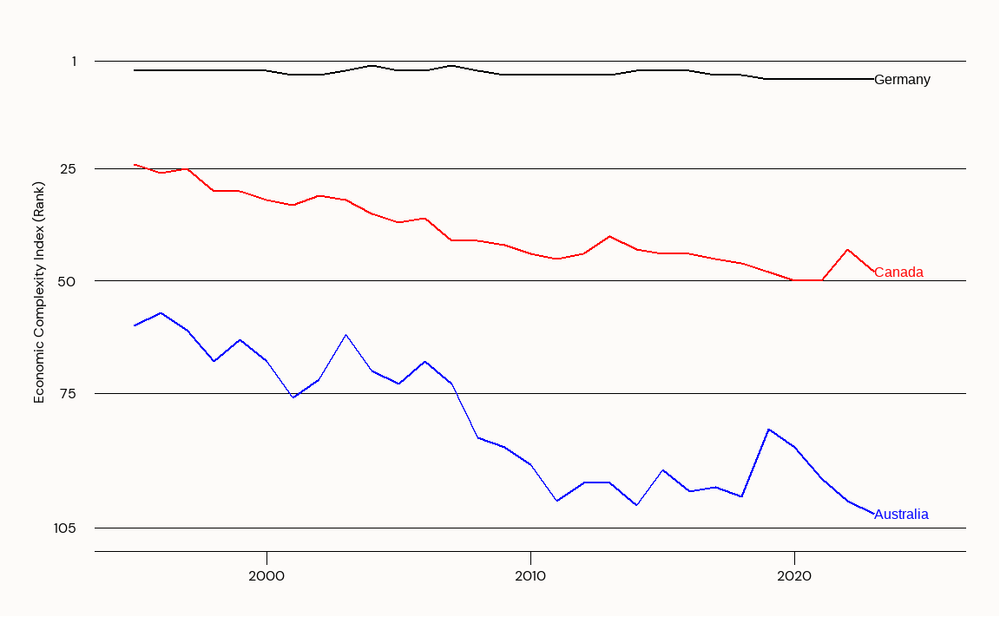

2 Economic Complexity
Economic complexity is a measure of the knowledge or capabilities embedded with an economy.
When we say capabilities - we mean the knowledge, skills, human and physical capital, and other endowments such as access to raw materials or climate, that a country or region possesses, enabling it to produce certain goods or services. Capabilities can be determined by trade data, or other data sources such as employment by industry.
In principle, the more capabilities a country has (i.e., the higher its economic complexity), the more ways these capabilities can be combined to create new or unique products which can not be created elsewhere.
Economic complexity quantifies and describes the differences in capabilities between economies at a point in time. Differences in economic complexity can explain why there are differences in per-capita Gross Domestic Product (GDP) (Hausmann 2013).
A key outcome from economic complexity analysis is the importance of path dependency. The future development patterns of a country or region can be predicted based on its current capabilities. This builds on a theoretical concept called relatedness.
Relatedness is a measure of the probability that a country or region who is specialised in one product will also specialise in another product.
Some examples include:
a country that exports t-shirts is more likely to also export pants because of the similarity of skills and equipment required
a region that specialises in copper mining is more likely to also specialise in other kinds of mining because of the similarity of skills, equipment, and co-location of minerals
a region that exports bananas is more likely to also export mangos because of the similarity of climate
Relatedness between jobs or products can be due to technological sophistication, knowledge spill overs from one activity to another, similarities in inputs or outputs in value chains, or the presence of requisite institutions.
2.1 Economic Complexity in Australia
In Australia, there has been a continuous decline in the contribution of the manufacturing sector to overall GDP, and manufacturing employment to the total workforce. While de-industrialisation has been seen across other countries, the decline in Australia has not only relative to other sectors, but absolute. The decline of manufacturing in Australia was punctuated by announcements in 2013 and 2014 that local automotive manufacturing would come to an end. As such, the decline in Australia’s ranking in economic complexity, as shown in Figure 2.1 has been rapid. Australia’s economic complexity now ranks 102nd, similar to Namibia, Ghana, and Botswana.
Outside of the broader trend of de-industrialisation, the question remains: what industries can replace those which are in decline, or have been lost? Research shows that different policy responses are required depending on the current level of complexity (Hidalgo 2021)
2.2 Embedding Economic Complexity into Industry Policy
The deliberate lack of industry policy in Australia in favour of policy based on the rationality of markets has resulted in an economy which prioritises sectors and activities that generate the highest returns to capital.
Active and directional industry policy instead prioritises sectors and activities that provide higher returns to society. Such sectors:
embody greater knowledge intensity and have high positive spill-overs (for example, local/domestic processing and value-adding of minerals compared to dig and ship)
can assist with large scale societal challenges, such as the decarbonisation/net zero agenda (and capturing the economic benefits), building and retaining sovereign capabilities, and generating inclusive economic growth (reversing inequality).
have the potential to create high quality and secure jobs
Economic complexity analysis provides a quantitative evidence base for how to best direct existing industrial capabilities towards building an economy that works better for everyone. Economic complexity is a method for identifying both the existing productive capabilities of a location, but also the links between existing capabilities and potential future capabilities/opportunities.
This is not a new idea:
The concept of smart specialisation focuses on the importance of location and regional knowledge. Smart specialisation has been used as the basis for industry and innovation policy throughout Europe - to direct regional economies along place-based technological trajectories, based on the existing knowledge present in the region (Rigby and Essletzbichler 1997). Smart specialisation policy realises that - because knowledge is location dependent - improved development outcomes can be created by focussing on distinctive and original areas of specialisation, rather than simply copying what has been successful elsewhere (Dominique Foray, Paul A. David, and Bronwyn Hall 2009) . That is, what has been successful in one region (i.e. Silicon Valley) may not necessarily work in other regions.
Note
A comprehensive industry policy should be seen as an industrial strategy. The first step of such a strategy requires a formal identification of existing and future opportunities. Economic complexity provides a framework for identifying opportunities based on current industrial capabilities. These opportunities lead to increases in economic complexity, which means more capabilities, skills, and knowledge, and economic growth. This creates a self-reinforcing cycle where an industry policy embedded with economic complexity generates opportunities which build complexity which create more opportunities.
2.2.1 Diversification Analysis and Opportunity Identification
Diversification analysis is the first and most basic method available. It looks at the existing capabilities in a region, and identifies what related activities can be prioritised to best make use of these capabilities. For example, consider the economic complexity of a region like Whyalla.
Diversification analysis is the first and most basic method.
Given a suite of existing capabilities, what related activities can be prioritised to best make use of the capabilities.
Identify where those related activities can be performed.
2.2.2 Opportunity Identification
Opportunity identification takes the diversification results and analyses:
current and future strengths and weaknesses within the sector
competitors and suppliers
anticipated international market conditions and industry demand characteristics
barriers to entry and minimum efficient scale issues
the size and economic significance of the opportunity
the most important elements of the value chain to capture
the alignment between the opportunities and strategic, regional, or national goals and priorities.